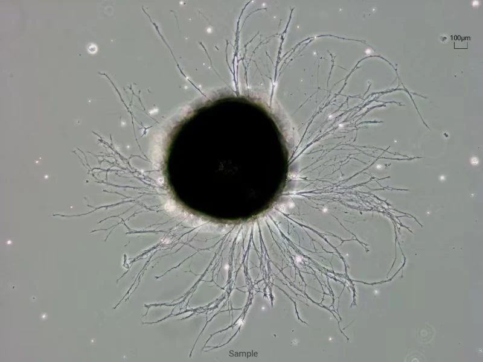

Innovative Techniques to Map the Molecular Landscape
To investigate the dynamic life of RNA in neural cells, we employ a powerful suite of modern techniques.
Read the complete statement
To investigate the dynamic life of RNA in neural cells, we employ a powerful suite of modern techniques. A key focus is on local translation—the process by which proteins are synthesized directly at the synapse in response to neuronal activity. To isolate this critical compartment, we utilize sophisticated methods such as synaptosome isolation by FACS and gradient centrifugation, allowing us to purify functional synaptic junctions and directly examine the translational events. We complement this with translatome profiling to capture a global snapshot of all the mRNAs actively being translated into proteins, giving us an unparalleled view of the functional genome. To bridge the gap between basic discovery and human disease, we utilize iPSC-derived cell types (such as neurons and astrocytes), creating human-relevant models that allow us to study disease mechanisms and screen for potential therapeutics in a patient-specific context.
